学习不走弯路，关注公众号 回复「学习路线」，获取mall项目专属学习路线！
RabbitMQ实现即时通讯居然如此简单！连后端代码都省得写了？
有时候我们的项目中会用到
即时通讯功能，比如电商系统中的客服聊天功能，还有在支付过程中，当用户支付成功后，第三方支付服务会回调我们的回调接口，此时我们需要通知前端支付成功。最近发现RabbitMQ可以很方便的实现即时通讯功能，如果你没有特殊的业务需求，甚至可以不写后端代码，今天给大家讲讲如何使用RabbitMQ来实现即时通讯！
MQTT协议
MQTT（Message Queuing Telemetry Transport，消息队列遥测传输协议），是一种基于发布/订阅（publish/subscribe）模式的轻量级通讯协议，该协议构建于TCP/IP协议上。MQTT最大优点在于，可以以极少的代码和有限的带宽，为连接远程设备提供实时可靠的消息服务。
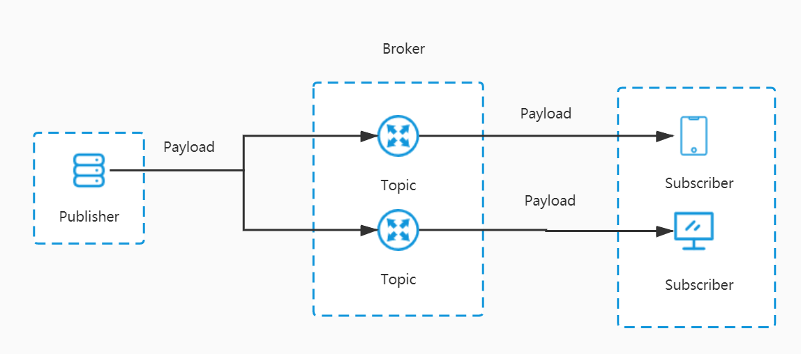
MQTT相关概念
- Publisher（发布者）：消息的发出者，负责发送消息。
- Subscriber（订阅者）：消息的订阅者，负责接收并处理消息。
- Broker（代理）：消息代理，位于消息发布者和订阅者之间，各类支持MQTT协议的消息中间件都可以充当。
- Topic（主题）：可以理解为消息队列中的路由，订阅者订阅了主题之后，就可以收到发送到该主题的消息。
- Payload（负载）；可以理解为发送消息的内容。
- QoS（消息质量）：全称Quality of Service，即消息的发送质量，主要有
QoS 0、QoS 1、QoS 2三个等级，下面分别介绍下：- QoS 0（Almost Once）：至多一次，只发送一次，会发生消息丢失或重复；
- QoS 1（Atleast Once）：至少一次，确保消息到达，但消息重复可能会发生；
- QoS 2（Exactly Once）：只有一次，确保消息只到达一次。
RabbitMQ启用MQTT功能
RabbitMQ启用MQTT功能，需要先安装然RabbitMQ然后再启用MQTT插件。
首先我们需要安装并启动RabbitMQ，对RabbitMQ不了解的朋友可以参考《花了3天总结的RabbitMQ实用技巧，有点东西！》；
接下来就是启用RabbitMQ的MQTT插件了，默认是不启用的，使用如下命令开启即可；
rabbitmq-plugins enable rabbitmq_mqtt
- 开启成功后，查看管理控制台，我们可以发现MQTT服务运行在
1883端口上了。
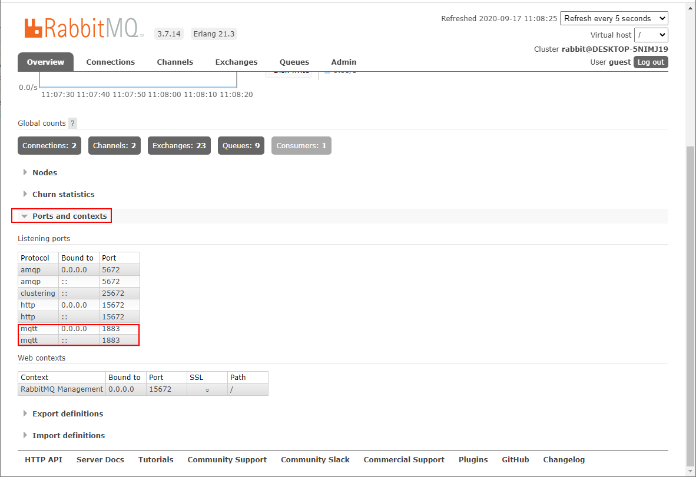
MQTT客户端
我们可以使用MQTT客户端来测试MQTT的即时通讯功能，这里使用的是
MQTTBox这个客户端工具。
- 首先下载并安装好
MQTTBox，下载地址：http://workswithweb.com/mqttbox.html
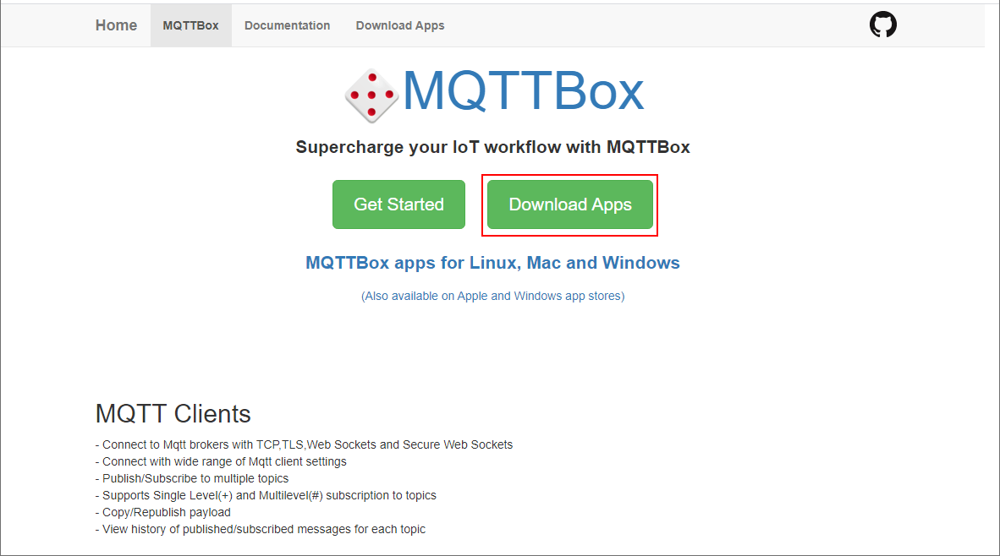
- 点击
Create MQTT Client按钮来创建一个MQTT客户端；
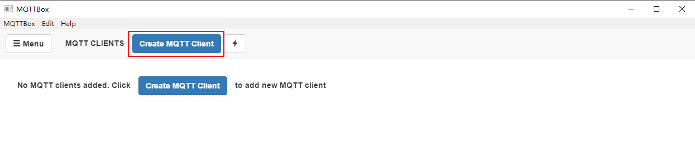
- 接下来对MQTT客户端进行配置，主要是配置好协议端口、连接用户名密码和QoS即可；
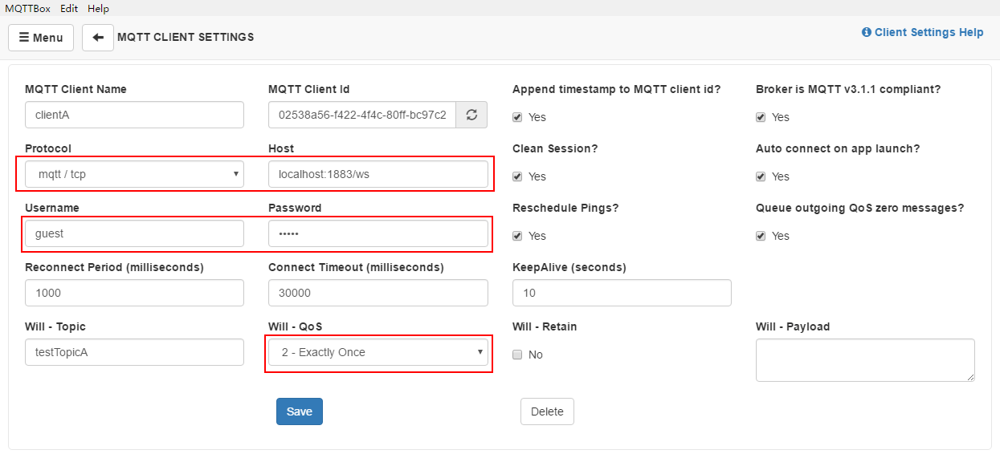
- 再配置一个订阅者，订阅者订阅
testTopicA这个主题，我们会向这个主题发送消息；
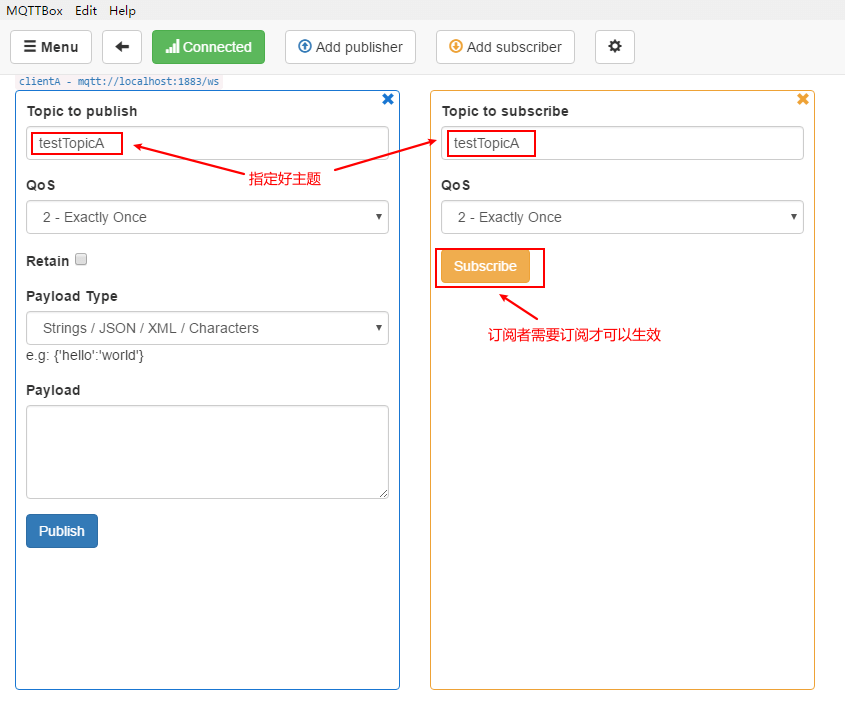
- 发布者向主题中发布消息，订阅者可以实时接收到。
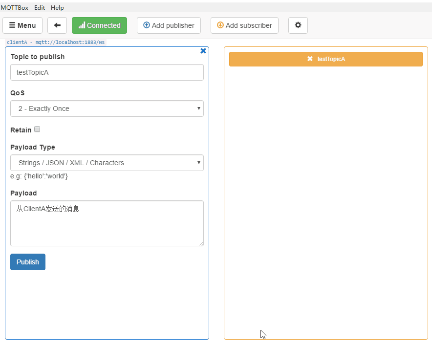
前端直接实现即时通讯
既然
MQTTBox客户端可以直接通过RabbitMQ实现即时通讯，那我们是不是直接使用前端技术也可以实现即时通讯？答案是肯定的！下面我们将通过html+javascript实现一个简单的聊天功能，真正不写一行后端代码实现即时通讯！
- 由于RabbitMQ与Web端交互底层使用的是WebSocket，所以我们需要开启RabbitMQ的MQTT WEB支持，使用如下命令开启即可；
rabbitmq-plugins enable rabbitmq_web_mqtt
- 开启成功后，查看管理控制台，我们可以发现MQTT的WEB服务运行在
15675端口上了；
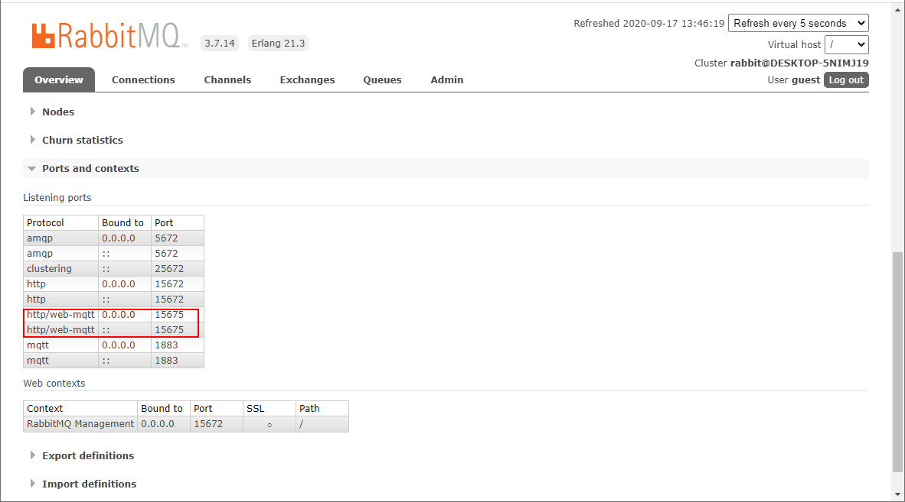
- WEB端与MQTT服务进行通讯需要使用一个叫
MQTT.js的库，项目地址：https://github.com/mqttjs/MQTT.js
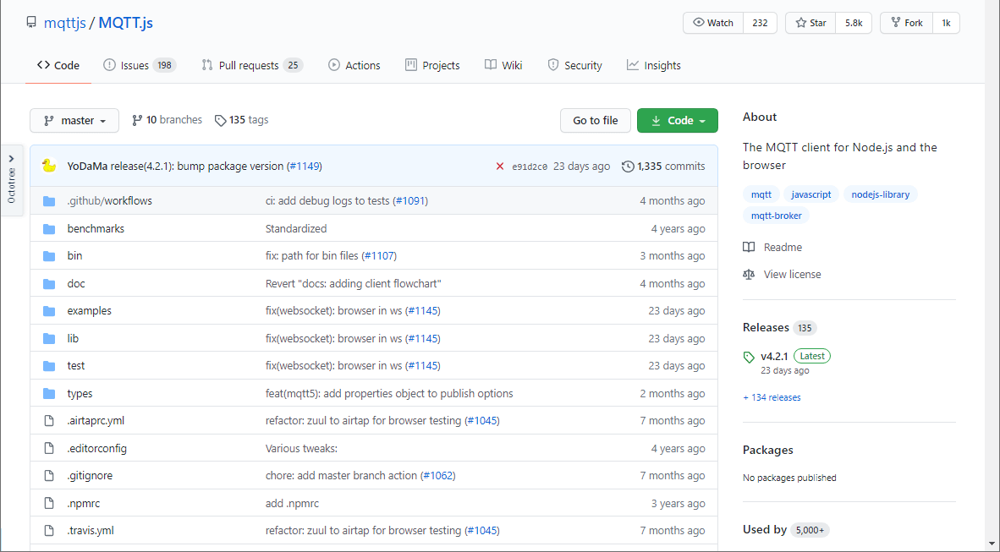
- 实现的功能非常简单，一个单聊功能，需要注意的是配置好MQTT服务的访问地址为：ws://localhost:15675/ws
<!DOCTYPE html>
<html lang="en">
<head>
<meta charset="UTF-8">
<title>Title</title>
</head>
<body>
<div>
<label>目标Topic：<input id="targetTopicInput" type="text"></label><br>
<label>发送消息：<input id="messageInput" type="text"></label><br>
<button onclick="sendMessage()">发送</button>
<button onclick="clearMessage()">清空</button>
<div id="messageDiv"></div>
</div>
</body>
<script src="https://unpkg.com/mqtt/dist/mqtt.min.js"></script>
<script>
//RabbitMQ的web-mqtt连接地址
const url = 'ws://localhost:15675/ws';
//获取订阅的topic
const topic = getQueryString("topic");
//连接到消息队列
let client = mqtt.connect(url);
client.on('connect', function () {
//连接成功后订阅topic
client.subscribe(topic, function (err) {
if (!err) {
showMessage("订阅topic：" + topic + "成功！");
}
});
});
//获取订阅topic中的消息
client.on('message', function (topic, message) {
showMessage("收到消息：" + message.toString());
});
//发送消息
function sendMessage() {
let targetTopic = document.getElementById("targetTopicInput").value;
let message = document.getElementById("messageInput").value;
//向目标topic中发送消息
client.publish(targetTopic, message);
showMessage("发送消息给" + targetTopic + "的消息：" + message);
}
//从URL中获取参数
function getQueryString(name) {
let reg = new RegExp("(^|&)" + name + "=([^&]*)(&|$)", "i");
let r = window.location.search.substr(1).match(reg);
if (r != null) {
return decodeURIComponent(r[2]);
}
return null;
}
//在消息列表中展示消息
function showMessage(message) {
let messageDiv = document.getElementById("messageDiv");
let messageEle = document.createElement("div");
messageEle.innerText = message;
messageDiv.appendChild(messageEle);
}
//清空消息列表
function clearMessage() {
let messageDiv = document.getElementById("messageDiv");
messageDiv.innerHTML = "";
}
</script>
</html>
接下来我们订阅不同的主题开启两个页面测试下功能（页面放在了SpringBoot应用的resource目录下了，需要先启动应用再访问）：
- 第一个订阅主题
testTopicA，访问地址：http://localhost:8088/page/index?topic=testTopicA - 第二个订阅主题
testTopicB，访问地址：http://localhost:8088/page/index?topic=testTopicB
- 第一个订阅主题
之后互相发送消息，让我们来看看效果吧！
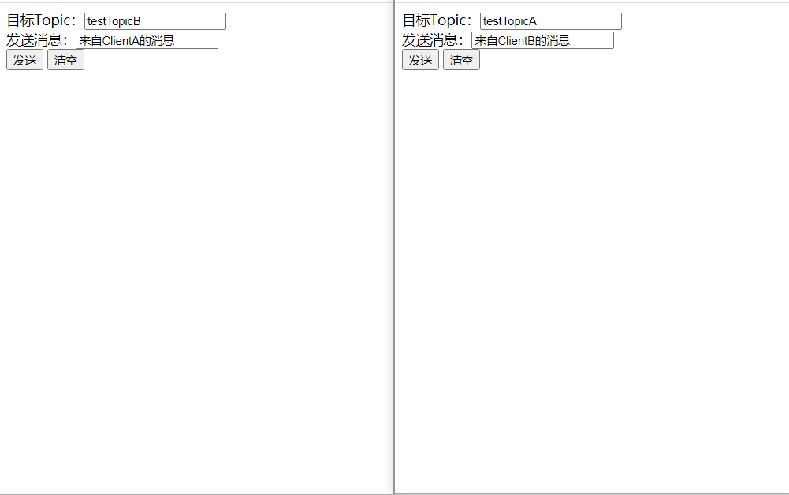
在SpringBoot中使用
没有特殊业务需求的时候，前端可以直接和RabbitMQ对接实现即时通讯。但是有时候我们需要通过服务端去通知前端，此时就需要在应用中集成MQTT了，接下来我们来讲讲如何在SpringBoot应用中使用MQTT。
- 首先我们需要在
pom.xml中添加MQTT相关依赖；
<!--Spring集成MQTT-->
<dependency>
<groupId>org.springframework.integration</groupId>
<artifactId>spring-integration-mqtt</artifactId>
</dependency>
- 在
application.yml中添加MQTT相关配置，主要是访问地址、用户名密码、默认主题信息；
rabbitmq:
mqtt:
url: tcp://localhost:1883
username: guest
password: guest
defaultTopic: testTopic
- 编写一个Java配置类从配置文件中读取配置便于使用；
/**
* MQTT相关配置
* Created by macro on 2020/9/15.
*/
@Data
@EqualsAndHashCode(callSuper = false)
@Component
@ConfigurationProperties(prefix = "rabbitmq.mqtt")
public class MqttConfig {
/**
* RabbitMQ连接用户名
*/
private String username;
/**
* RabbitMQ连接密码
*/
private String password;
/**
* RabbitMQ的MQTT默认topic
*/
private String defaultTopic;
/**
* RabbitMQ的MQTT连接地址
*/
private String url;
}
- 添加MQTT消息订阅者相关配置，使用
@ServiceActivator注解声明一个服务激活器，通过MessageHandler来处理订阅消息；
/**
* MQTT消息订阅者相关配置
* Created by macro on 2020/9/15.
*/
@Slf4j
@Configuration
public class MqttInboundConfig {
@Autowired
private MqttConfig mqttConfig;
@Bean
public MessageChannel mqttInputChannel() {
return new DirectChannel();
}
@Bean
public MessageProducer inbound() {
MqttPahoMessageDrivenChannelAdapter adapter =
new MqttPahoMessageDrivenChannelAdapter(mqttConfig.getUrl(), "subscriberClient",
mqttConfig.getDefaultTopic());
adapter.setCompletionTimeout(5000);
adapter.setConverter(new DefaultPahoMessageConverter());
//设置消息质量：0->至多一次；1->至少一次；2->只有一次
adapter.setQos(1);
adapter.setOutputChannel(mqttInputChannel());
return adapter;
}
@Bean
@ServiceActivator(inputChannel = "mqttInputChannel")
public MessageHandler handler() {
return new MessageHandler() {
@Override
public void handleMessage(Message<?> message) throws MessagingException {
//处理订阅消息
log.info("handleMessage : {}",message.getPayload());
}
};
}
}
- 添加MQTT消息发布者相关配置；
/**
* MQTT消息发布者相关配置
* Created by macro on 2020/9/15.
*/
@Configuration
public class MqttOutboundConfig {
@Autowired
private MqttConfig mqttConfig;
@Bean
public MqttPahoClientFactory mqttClientFactory() {
DefaultMqttPahoClientFactory factory = new DefaultMqttPahoClientFactory();
MqttConnectOptions options = new MqttConnectOptions();
options.setServerURIs(new String[] { mqttConfig.getUrl()});
options.setUserName(mqttConfig.getUsername());
options.setPassword(mqttConfig.getPassword().toCharArray());
factory.setConnectionOptions(options);
return factory;
}
@Bean
@ServiceActivator(inputChannel = "mqttOutboundChannel")
public MessageHandler mqttOutbound() {
MqttPahoMessageHandler messageHandler =
new MqttPahoMessageHandler("publisherClient", mqttClientFactory());
messageHandler.setAsync(true);
messageHandler.setDefaultTopic(mqttConfig.getDefaultTopic());
return messageHandler;
}
@Bean
public MessageChannel mqttOutboundChannel() {
return new DirectChannel();
}
}
- 添加MQTT网关，用于向主题中发送消息；
/**
* MQTT网关，通过接口将数据传递到集成流
* Created by macro on 2020/9/15.
*/
@Component
@MessagingGateway(defaultRequestChannel = "mqttOutboundChannel")
public interface MqttGateway {
/**
* 发送消息到默认topic
*/
void sendToMqtt(String payload);
/**
* 发送消息到指定topic
*/
void sendToMqtt(String payload, @Header(MqttHeaders.TOPIC) String topic);
/**
* 发送消息到指定topic并设置QOS
*/
void sendToMqtt(@Header(MqttHeaders.TOPIC) String topic, @Header(MqttHeaders.QOS) int qos, String payload);
}
- 添加MQTT测试接口，使用MQTT网关向特定主题中发送消息；
/**
* MQTT测试接口
* Created by macro on 2020/9/15.
*/
@Api(tags = "MqttController", description = "MQTT测试接口")
@RestController
@RequestMapping("/mqtt")
public class MqttController {
@Autowired
private MqttGateway mqttGateway;
@PostMapping("/sendToDefaultTopic")
@ApiOperation("向默认主题发送消息")
public CommonResult sendToDefaultTopic(String payload) {
mqttGateway.sendToMqtt(payload);
return CommonResult.success(null);
}
@PostMapping("/sendToTopic")
@ApiOperation("向指定主题发送消息")
public CommonResult sendToTopic(String payload, String topic) {
mqttGateway.sendToMqtt(payload, topic);
return CommonResult.success(null);
}
}
- 调用接口向主题中发送消息进行测试；
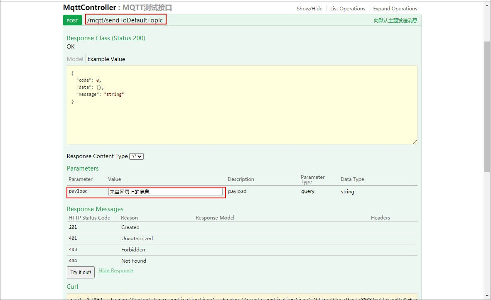
- 后台成功接收到消息并进行打印。
2020-09-17 14:29:01.689 INFO 11192 --- [ubscriberClient] c.m.mall.tiny.config.MqttInboundConfig : handleMessage : 来自网页上的消息
2020-09-17 14:29:06.101 INFO 11192 --- [ubscriberClient] c.m.mall.tiny.config.MqttInboundConfig : handleMessage : 来自网页上的消息
2020-09-17 14:29:07.384 INFO 11192 --- [ubscriberClient] c.m.mall.tiny.config.MqttInboundConfig : handleMessage : 来自网页上的消息
总结
消息中间件应用越来越广泛，不仅可以实现可靠的异步通信，还可以实现即时通讯，掌握一个消息中间件还是很有必要的。如果没有特殊业务需求，客户端或者前端直接使用MQTT对接消息中间件即可实现即时通讯，有特殊需求的时候也可以使用SpringBoot集成MQTT的方式来实现，总之消息中间件是实现即时通讯的一个好选择！
项目源码地址
https://github.com/macrozheng/mall-learning/tree/master/mall-tiny-mqtt
公众号